Emergency & Trauma Care
ATLS-based trauma care and rapid management of acute surgical conditions, medical emergencies and medico-legal work.
MBBS, MS (General Surgery)
Consultant General Surgeon · Reg. No. 2019/04/1948
Compassionate, evidence-based and patient-centred surgical care — from the emergency room to the operating theatre, and beyond the hospital into the community.
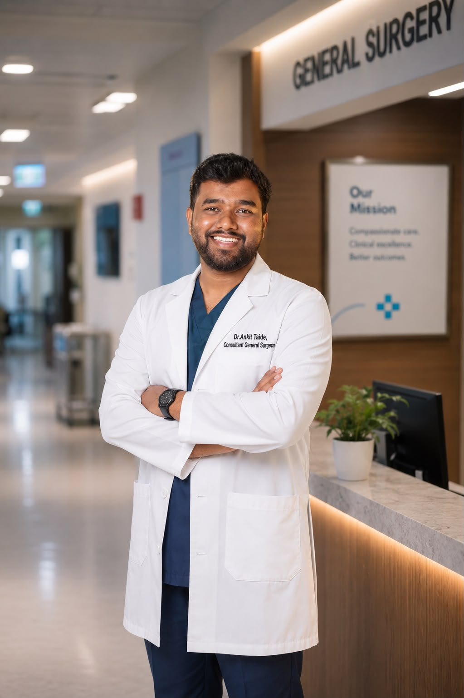
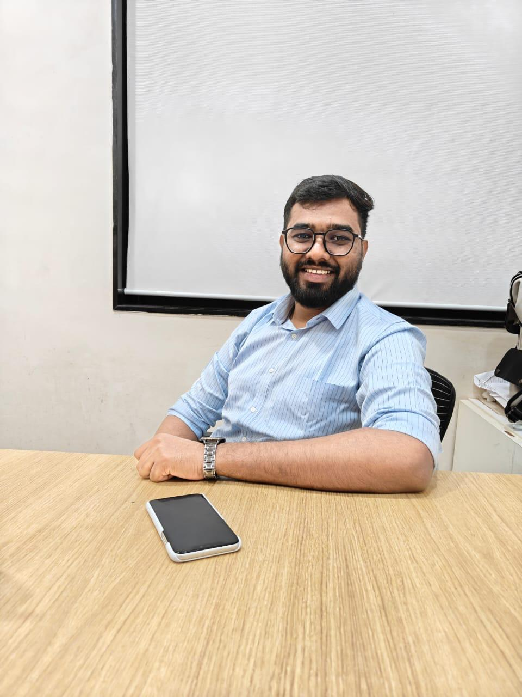
I am a General Surgeon dedicated to delivering compassionate, evidence-based, and patient-centred surgical care. My clinical journey has provided me with extensive experience in emergency surgery, trauma care, critical care, surgical oncology, perioperative management, and the comprehensive management of patients across both government and private healthcare institutions.
Beyond clinical practice, I am deeply committed to academic medicine, research, teaching, and public health. I have actively mentored undergraduate medical students, contributed to scientific research through published papers and national conference presentations, and continue to promote evidence-based medical education through professional and digital platforms.
Throughout my career, I have embraced leadership roles in clinical services, hospital administration, academic activities, and community health programs. I strongly believe that excellence in healthcare is achieved through integrity, teamwork, continuous learning, empathy, and innovation.
“Surgery is not merely about treating disease — it is about restoring hope, preserving dignity, and making a meaningful difference in every life we touch.” — Dr. Ankit Taide
Competent in independent assessment and management of surgical patients across OPD, IPD and emergency settings — with hands-on experience in open general surgical procedures.
ATLS-based trauma care and rapid management of acute surgical conditions, medical emergencies and medico-legal work.
Special interest in breast surgery — thesis on breast lump presentation at a rural tertiary care centre — and oncology case management.
Peri-operative and postoperative patient care, ICU management and complication management for safe surgical outcomes.
Hernioplasty, appendicectomy, incision & drainage and a wide range of open general surgical procedures.
Diagnosis and surgical management of urological conditions and anorectal disorders including piles, fistula and fissure.
MJPJAY (Mahatma Jyotiba Phule Jan Arogya Yojana) in-charge experience, Covid-care administration and clinical leadership.
Currently working as a Senior Resident in the Department of General Surgery at Government Medical College, Akola — providing comprehensive surgical care, managing emergency and elective cases, and actively participating in teaching and academic activities.
Master of Surgery (General Surgery), Maharashtra University of Health Sciences, Nashik. Residency with extensive operative and emergency exposure at a rural tertiary care centre.
Taught and mentored undergraduate MBBS students while continuing clinical duties at Government Medical College, Akola.
Dedicated Covid Health Care Centre — managed the Covid-19 ward and ICU while also serving as administrator during the pandemic.
In-house consultant at Basanti Multispeciality Hospital and Akola Dialysis Centre; in-charge of the Mahatma Jyotiba Phule Jan Arogya Yojana scheme.
Served across Casualty, Forensic Medicine and General Medicine departments, handling emergencies and medico-legal work.
Bachelor of Medicine and Bachelor of Surgery, Maharashtra University of Health Sciences, Nashik, followed by a one-year rotating internship.
Committed to academic medicine — from a rural tertiary-care thesis on breast disease to papers presented on national stages, and a continuing role as mentor and medical educator.
“Study of patients presenting with breast lumps at a rural tertiary care centre” — the foundation of a special interest in breast surgery.
Peer-reviewed publications contributing to surgical literature.
2 papers presented at national conferences (incl. MASICON 2024 & ASHICON 2023) and 1 poster at a state-level conference.
Tutor and mentor to undergraduate MBBS students; organiser of departmental academic programmes, known for oratorship.
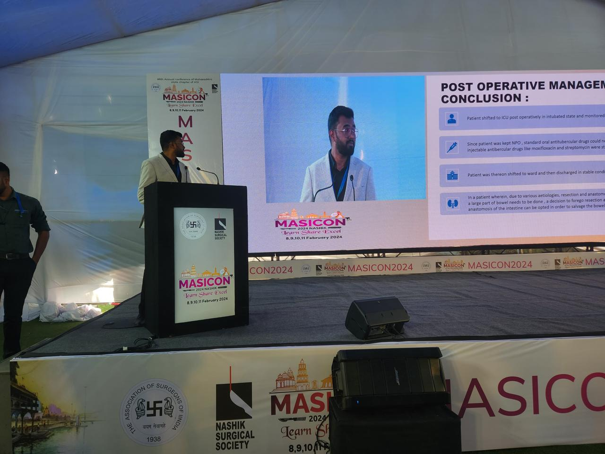
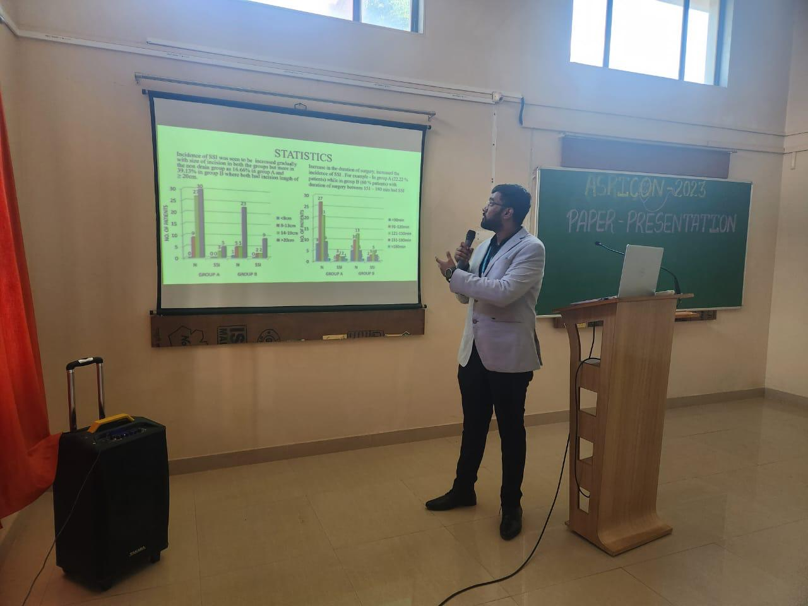
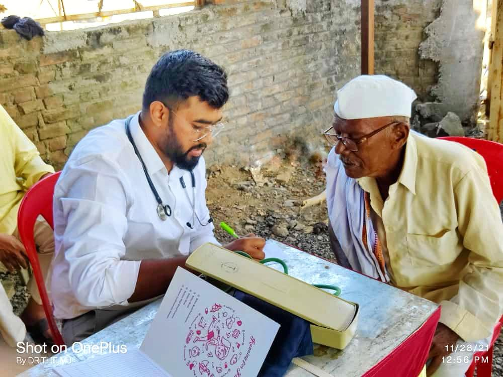
One of my proudest initiatives — a voluntary social platform dedicated to connecting blood donors with patients in urgent need. Through Donor on Call, I have worked to promote voluntary blood donation, improve emergency access to blood, and strengthen community participation in healthcare.
This initiative reflects my belief that a doctor's responsibility extends beyond the hospital and into society.
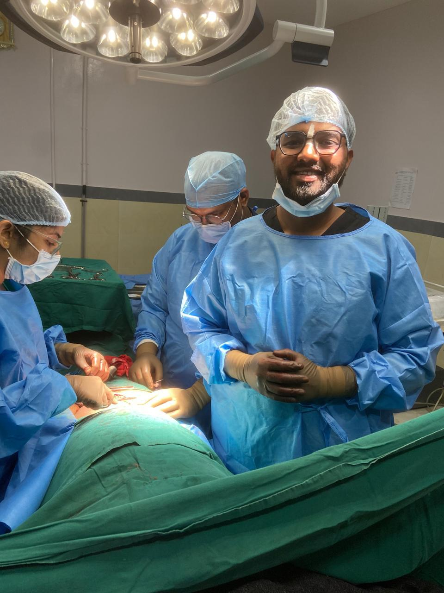
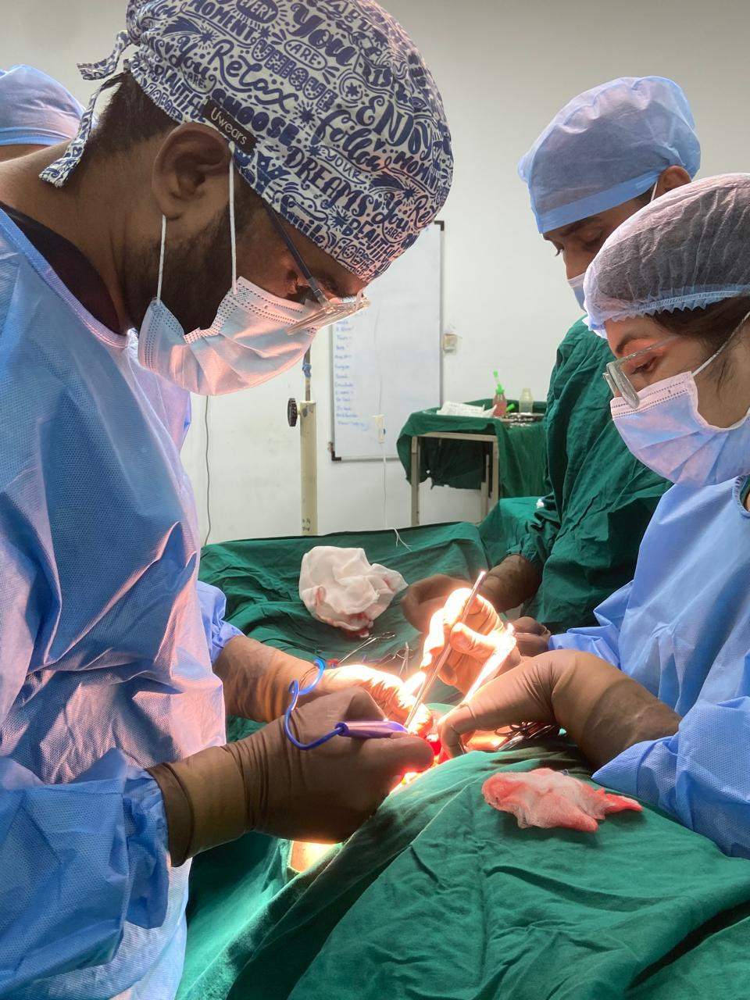
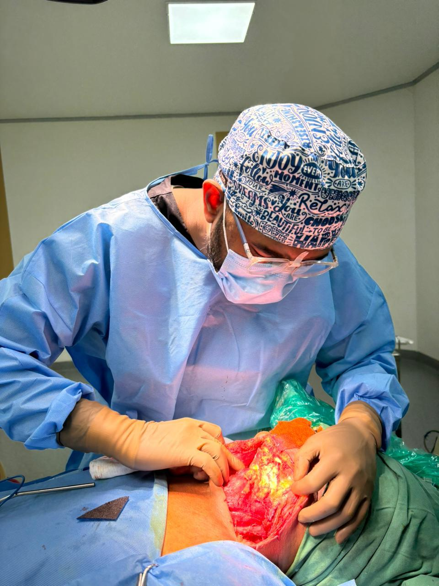
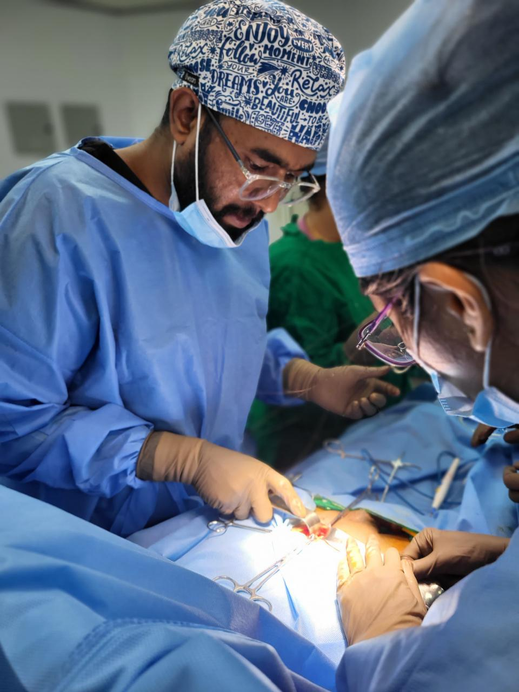
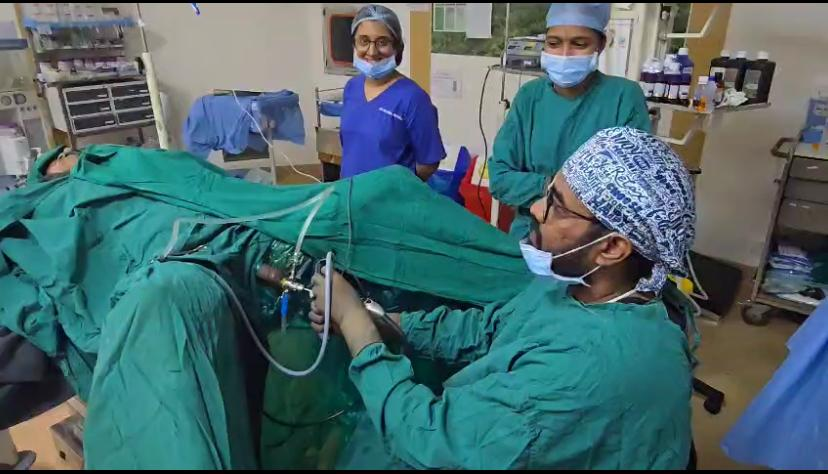
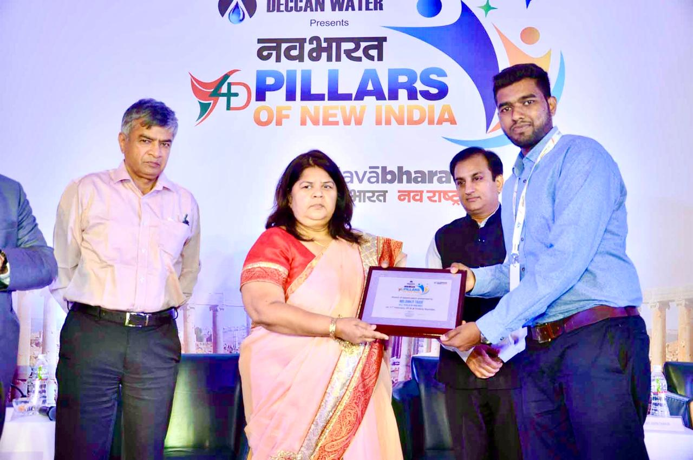
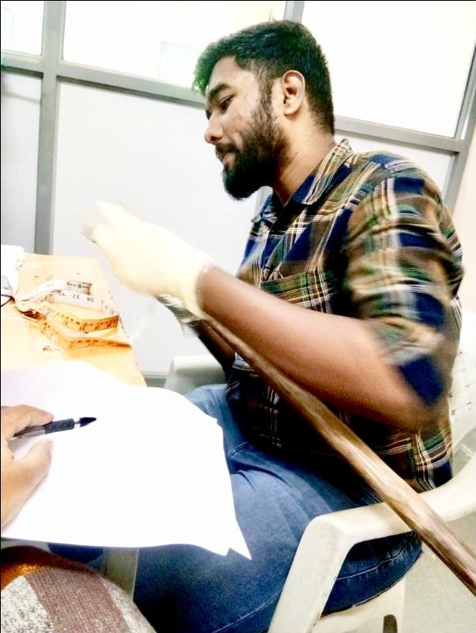
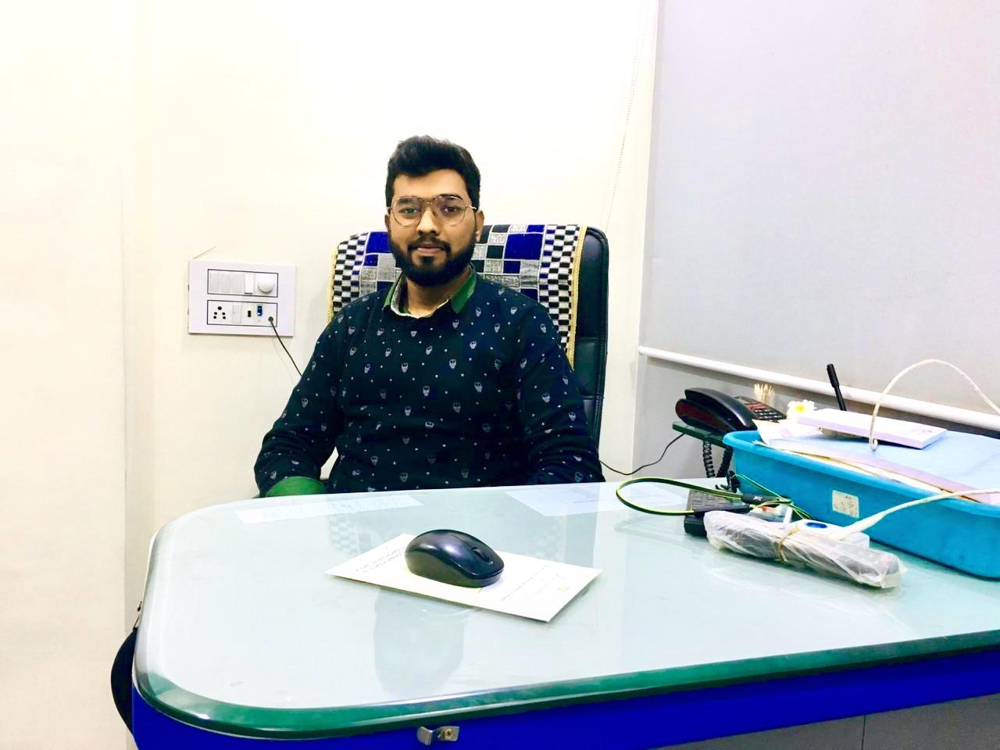
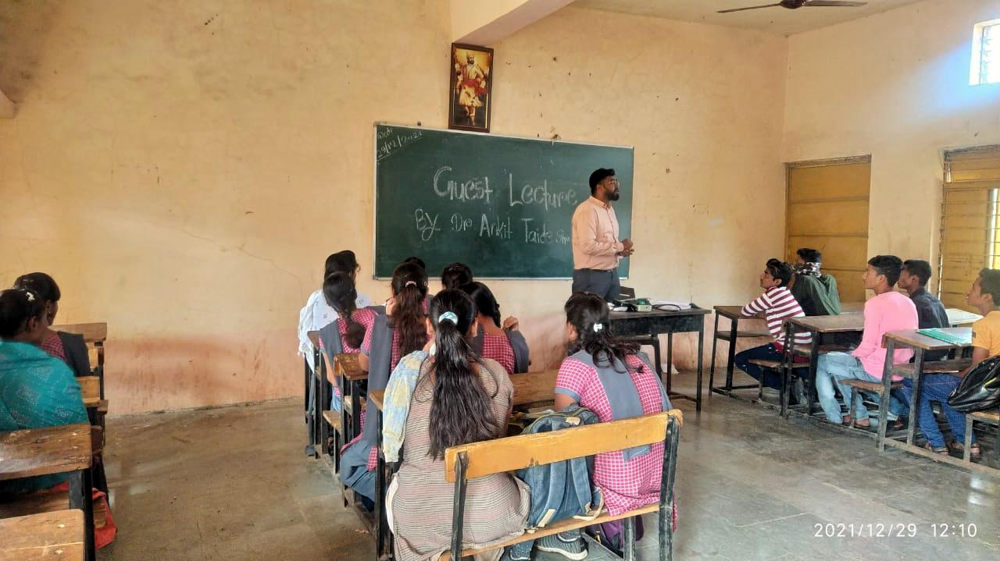
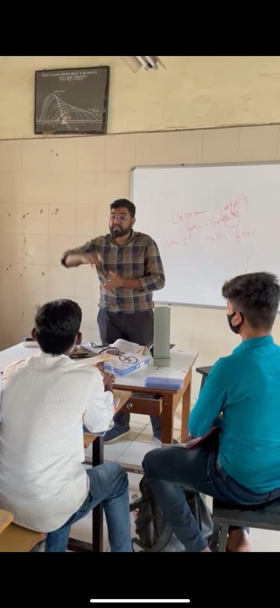
For appointments, surgical opinions, academic collaborations or Donor on Call — reach out anytime.